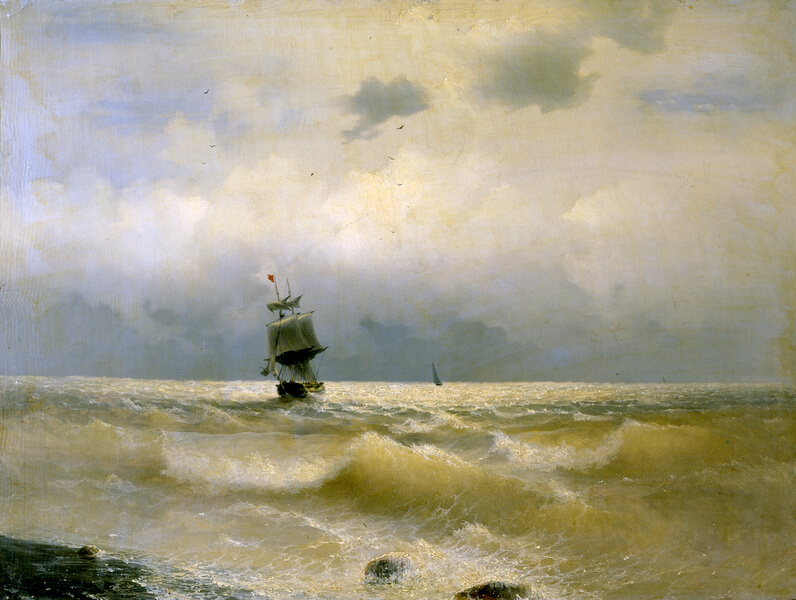

Иван Константинович Айвазовский
Корабль у берега
“Корабль у берега” – классическая работа Айвазовского. Он любил писать морскую
разбушевавшуюся стихию. На картине как раз изображен начинающийся шторм. Корабль накренило. Паруса крепко надуты.
Море бежевого цвета от поднятого со дна песка. Поразительно, что Айвазовский писал картину на одном дыхании, пока
не высохнет краска. За один день. Иногда за полдня. Невероятное мастерство. Не удивительно, что Айвазовский оставил
поистине огромное художественное наследие. Более 6000 работ. Три из них и хранятся в Радищевском музее. Вам не
кажется, что на таком расстоянии от берега корабль слишком мелкий? Либо он должен быть больше. Либо находиться
дальше. Уверена, что Айвазовский осознанно сделал корабль такого размера. Немного пренебрегая реалистичностью.
Чтобы подчеркнуть превосходство природной стихии над кораблем.